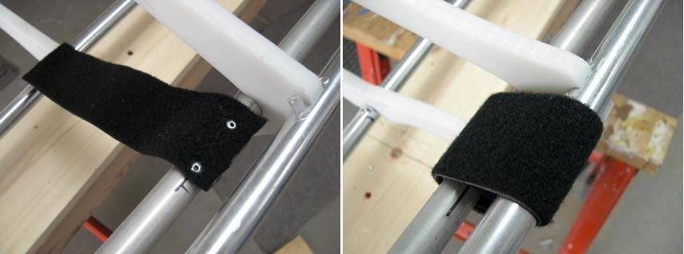

| Inwales ( Velcro) | Menu Previous Page Next Page |
|
 Inwales ( Velcro) - This method of securing inwales was suggested by Brian Nystrom. A 9in section of non-adhesive 1.5" - 2" Velcro (loop) is riveted to the inwales near each cross section. A 3" section on Velcro (hook) is sewn to the end of the 9" Velcro section (opposite side). When the Vecro is tightly wrapped around the gunwales it holds the stringers firmly in place for added frame rigidity. Though not as simple a solution as using tape, it does speed up assembly. When dis-assembled, the Velcro is wrapped around the inwale for storage. This method needs further testing to insure that the frame will slide easily into the skin when using the thicker Velcro. |
|